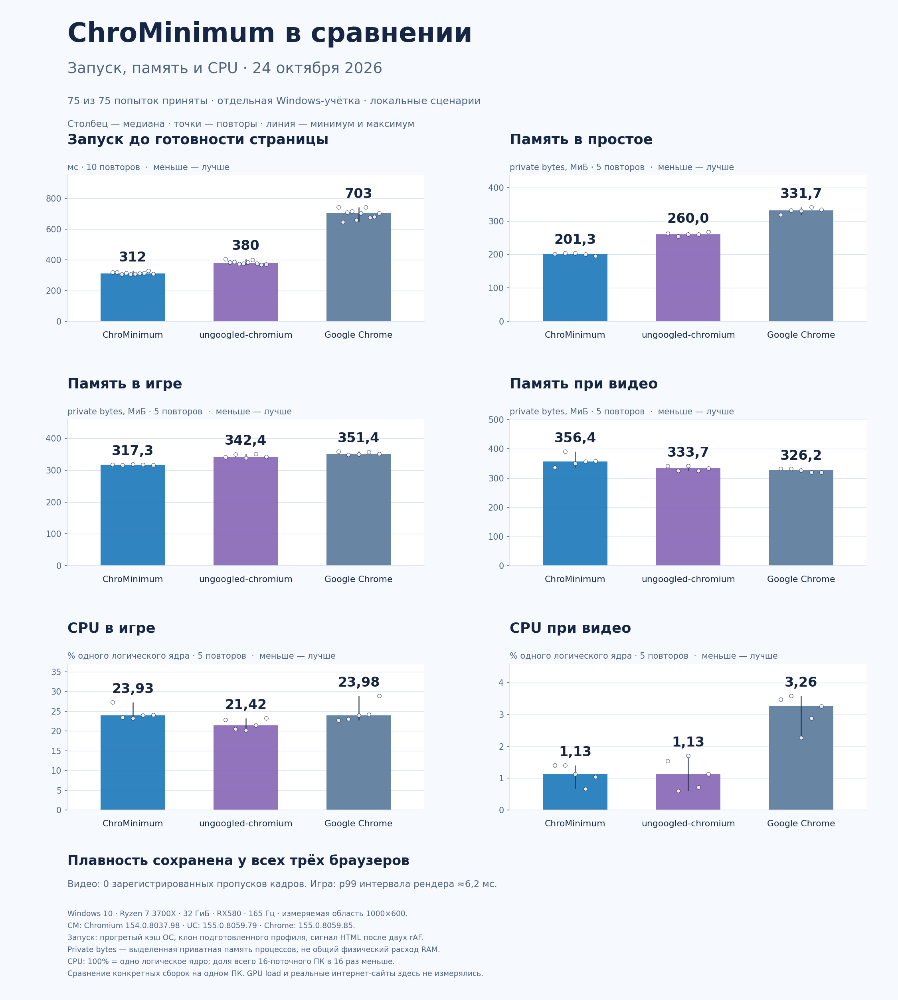

<style>
.cm-benchmark{max-width:1120px;margin:0 auto;padding:40px 24px;color:#172743;font:16px/1.65 Inter,system-ui,sans-serif}.cm-benchmark *{box-sizing:border-box}.cm-benchmark h2{font-size:clamp(28px,4vw,44px);line-height:1.15;letter-spacing:-.03em;margin:8px 0 20px}.cm-benchmark .cm-date{color:#52647e;font-size:14px}.cm-benchmark .cm-cards{display:grid;grid-template-columns:repeat(3,1fr);gap:16px;margin:28px 0}.cm-benchmark .cm-card{background:#fff;border:1px solid #dce4f2;border-radius:20px;padding:22px}.cm-benchmark .cm-card strong{display:block;font-size:26px;color:#2864e8}.cm-benchmark figure{margin:28px 0}.cm-benchmark img{display:block;width:100%;height:auto;border-radius:16px;border:1px solid #dce4f2}.cm-benchmark figcaption,.cm-benchmark .cm-note{font-size:14px;color:#52647e}.cm-benchmark a{color:#215bc4;text-underline-offset:3px}.cm-benchmark .cm-table-wrap{overflow-x:auto}.cm-benchmark table{border-collapse:collapse;width:100%;font-size:14px}.cm-benchmark th,.cm-benchmark td{padding:12px 10px;border-bottom:1px solid #dce4f2;text-align:right}.cm-benchmark th:first-child,.cm-benchmark td:first-child{text-align:left}.cm-benchmark caption{text-align:left;font-weight:600;padding:12px 0}.cm-benchmark details{border:1px solid #dce4f2;border-radius:16px;padding:18px 22px;margin:24px 0;background:#fff}.cm-benchmark summary{cursor:pointer;font-weight:600}.cm-benchmark summary:focus-visible,.cm-benchmark a:focus-visible{outline:3px solid #237cbb;outline-offset:4px}.cm-benchmark .cm-tradeoffs{border-left:3px solid #8b6bb9;padding-left:18px}@media(max-width:640px){.cm-benchmark{padding:24px 16px}.cm-benchmark .cm-cards{grid-template-columns:1fr}.cm-benchmark .cm-card{padding:16px}}
</style>
<section class="cm-benchmark" aria-labelledby="cm-benchmark-title">
<p class="cm-date">Локальные измерения · 24 октября 2026</p>
<h2 id="cm-benchmark-title">Меньше памяти в простое. Быстрее запуск.</h2>
<p>Мы сравнили ChroMinimum, ungoogled-chromium и Google Chrome на одном ПК: запуск локальной страницы, простой, воспроизведение видео и игру на three.js. Все 75 попыток прошли проверку условий.</p>
<div class="cm-cards">
<div class="cm-card"><strong>312 мс</strong>До готовности страницы. UC — 380 мс, Chrome — 703 мс. Медианы 10 запусков с прогретым кэшем ОС.</div>
<div class="cm-card"><strong>201 МиБ</strong>Private bytes в простое. UC — 260 МиБ, Chrome — 332 МиБ. Медианы 5 попыток.</div>
<div class="cm-card"><strong>Плавность сохранена</strong>Видео без зарегистрированных пропусков. Игровой p99 интервала рендера — около 6,2 мс у всех трёх.</div>
</div>
<p class="cm-tradeoffs"><strong>Есть и проигрыши.</strong> При видео CM выделял на 7–9% больше private bytes. В игре его CPU был примерно на 12% выше UC и практически равен Chrome. Разница CM и UC — около 0,16 процентного пункта загрузки всего тестового ПК.</p>
<figure>
<a href="browser-comparison-2026-10-24.png" aria-label="Открыть диаграмму в полном размере"><picture><source type="image/webp" srcset="browser-comparison-2026-10-24.webp"></picture></a>
<figcaption>Столбцы — медианы, точки — повторы, линии — минимум и максимум. Для запуска — по 10 повторов, для простоя, видео и игры — по 5. Нажмите на диаграмму, чтобы увеличить.</figcaption>
</figure>
<div class="cm-table-wrap"><table><caption>Медианы повторов. Private bytes — выделенная приватная память процессов.</caption><thead><tr><th scope="col">Показатель</th><th scope="col">CM</th><th scope="col">UC</th><th scope="col">Chrome</th></tr></thead><tbody>
<tr><th scope="row">Запуск, мс</th><td>312</td><td>380</td><td>703</td></tr>
<tr><th scope="row">Простой: private bytes, МиБ</th><td>201,3</td><td>260,0</td><td>331,7</td></tr>
<tr><th scope="row">Игра: private bytes, МиБ</th><td>317,3</td><td>342,4</td><td>351,4</td></tr>
<tr><th scope="row">Видео: private bytes, МиБ</th><td>356,4</td><td>333,7</td><td>326,2</td></tr>
<tr><th scope="row">Игра: CPU, % одного ядра</th><td>23,93</td><td>21,42</td><td>23,98</td></tr>
<tr><th scope="row">Видео: CPU, % одного ядра</th><td>1,13</td><td>1,13</td><td>3,26</td></tr>
</tbody></table></div>
<p class="cm-note">Результаты конкретных сборок на одном ПК. CM — Chromium 154, UC и Chrome — 155. Private bytes не равны общему физическому расходу RAM. Это не обещание такой же экономии на любом сайте и устройстве.</p>
<details><summary>Методика и ограничения</summary><p>Тестовый ПК: Windows 10, Ryzen 7 3700X, 32 ГиБ RAM, Radeon RX580, экран 165 Гц. Тесты выполнялись в отдельной Windows-учётке, с одноразовыми клонами подготовленных синтетических браузерных профилей и одинаковой измеряемой областью 1000×600 при DPR/scale=1. Порядок браузеров чередовался по кругам.</p>
<p>Версии: CM — Chromium 154.0.8037.98; ungoogled-chromium — 155.0.8059.79; Google Chrome — 155.0.8059.85. Сравниваются продукты целиком; вклад оболочки и версии движка отдельно не выделялся. Chrome запускался из распакованного официального установщика, без системной установки.</p>
<p>Запуск измерялся от создания процесса до получения HTTP-сигнала локальной HTML-страницы после двух requestAnimationFrame. Кэш ОС прогрет; это не холодный запуск и не внешнее измерение появления пикселей на экране.</p>
<p>Простой: 5 секунд стабилизации и 30 секунд наблюдения. Видео: 10 медиасекунд прогрева и 60 секунд наблюдения. Игра: 10 секунд после готовности сцены и 60 секунд наблюдения. Видео — локальный синтетический файл, игра — закреплённая сцена three.js с одинаковым движением камеры. Реальные интернет-сайты в эту серию не входили.</p>
<p>Память и CPU читались раз в секунду для процессов текущего сеанса, чьи исполняемые файлы находились в каталоге тестового браузера. Для обнаруженных завершившихся процессов сохранялись конечные CPU-счётчики. Процессы вне этого каталога и целиком между отсчётами не учитывались. С краёв ресурсного окна отбрасывалось по 1,5 секунды.</p>
<p>CPU на диаграмме нормирован на одно логическое ядро: 100% означает одно полностью занятое ядро. Для доли всего 16-поточного ПК числа нужно делить на 16. GPU load, видеопамять и энергопотребление не измерялись.</p>
<p>Наблюдатель работал отдельно: медиана его CPU около 1,31% одного ядра, private bytes около 73 МиБ. Эти значения не включены в браузерные метрики; влияние самого наблюдателя отдельно не измерялось. Фоновые службы ОС сохранялись, полной изоляции фоновой нагрузки не было.</p>
<p>Все 75 попыток приняты, браузеры закрылись штатно. Сводные показатели пересчитаны из исходных отсчётов без расхождений. Интервалы рендера и браузерные счётчики пропусков не заменяют внешнее измерение физического показа кадров.</p></details>
<p><a href="results.csv" download>Все агрегаты: CSV</a> · <a href="results.json" download>JSON</a></p>
</section>
